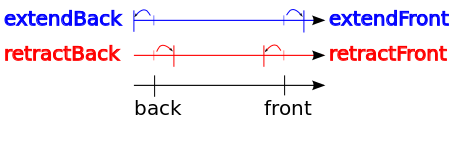

Table of Contents
Part of the Geometry package.
This module gathers classes that represent and recognize digital straight segments. To dynamically recognize DSSs along a sequence of points, the basic class is ArithmeticalDSSComputer, which is a model of concepts::CDynamicBidirectionalSegmentComputer. Each instance of ArithmeticalDSSComputer has an instance of ArithmeticalDSS, which represents the recognized digital straight segment.
Moreover, any instance of ArithmeticalDSS has an instance of ArithmeticalDSL, which represents the bounding digital straight line of minimal parameters.
We detail below these three classes in a reverse order.
Related examples are exampleArithmeticalDSL.cpp, exampleArithmeticalDSS.cpp, and exampleArithmeticalDSSComputer.cpp
Digital straight lines
A digital straight line (DSL) of slope \( a/b \) (with \( a,b, \in \mathbb{Z} \), \( \gcd(a,b) = 1 \)), intercept \( \mu \in \mathbb{Z} \) and thickness \( \omega \in \mathbb{Z} \), which is conveniently denoted by \( D(a,b,\mu,\omega) \), is the set of digital points \( (x,y) \in \mathbb{Z}^2 \) such that \( \mu \leq ax - by < \mu + \omega \) (Reveilles, 1991 [85]).
Any DSL such that \( \omega = \max(|a|,|b|) \) (resp. \( \omega = |a| + |b| \)) is said to be naive (resp. standard) and is simply 8-connected (resp. 4-connected) (Reveilles, 1991 [85]).
For instance, the naive DSL \( D(2,5,0,5) \) is depicted below:

The standard DSL \( D(2,5,0,7) \) is thicker:
From now on, let us assume that \( \omega \) is either equal to \(\max(|a|,|b|) \) (naive case) or to \( |a| + |b| \) (standard case).
Then, any DSL is merely denoted by \( D(a,b,\mu) \).
Short example
A naive DSL can be declared and constructed as follows:
Then, within a window defined by two points (called firstPoint and lastPoint below), you can iterate over the DSL points:
- Note
- Note the difference of semantic between method ArithmeticalDSL.begin(), which returns an iterator pointing to the input point, and method ArithmeticalDSL.end(), which returns an iterator pointing past to the input point.
In the standard case, it is enough to replace Naive by Standard.
In order to use classes NaiveDSL and StandardDSL, you must include the following file:
Classes NaiveDSL and StandardDSL are both aliases of the class ArithmeticalDSL, which represents either a naive or a standard DSL. It gathers the generic code that represents a DSL in any octant.
Orientation
The arithmetical representation \( (a, b, \mu) \) is redondant. Exactly two representations describe one DSL. For instance, \( D(2,5,0) \) and \( D(-2,-5,-5) \) corresponds to the same set of points. This representation is thus interesting, since it includes an orientation preferably chosen to iterate over the DSL points from any point belonging to the DSL.
- Note
- Note that you must use method ArithmeticalDSL.negate() to get a representation from another one. Note also that method ArithmeticalDSL.equalsTo() compare two representations and returns 'true' iff the parameters \( a, b \) and \( \mu \) of the two representations are equal. However, the equality operator ArithmeticalDSL.operator== compare two sets of points and returns 'true' iff the two sets of points are equal, whatever the orientation.
Data members
ArithmeticalDSL stores as data members not only the parameters \( a, b \) and \( \mu \), but also redondant parameters described below. These extra parameters are useful to efficiently iterate over the DSL points.
- myA of type ArithmeticalDSL::Coordinate: \( a \) -parameter of the DSL, (equal to the y-component of the direction vector).
- myB of type ArithmeticalDSL::Coordinate: \( b \) -parameter of the DSL, (equal to the x-component of the direction vector).
- myLowerBound of type ArithmeticalDSL::Integer: \( \mu \) -parameter of the DSL that defines the lower leaning line \( ax - by = \mu \).
- myUpperBound of type ArithmeticalDSL::Integer: integer equal to \( \mu + \omega - 1 \) that defines the upper leaning line.
- myShift of type ArithmeticalDSL::Vector: vector \( s \) that translates any point of remainder \( r = ax - by \) to a point of remainder \( r + \omega \). Note that \( s \) is equal to 0 if \( \omega = 0 \), ie. if \( a \) and \( b \) are both null.
- mySteps of type ArithmeticalDSL::Steps (STL pair of Vector): couple of vectors \( v \) and \( w \) used to iterate over the DSL points so that a given DSL point \( p \) is followed by its unique neighbor point \( q \) belonging to the DSL in the orientation given by \( a \) and \( b \). Obviously, these two vectors are equal to 0 in the invalid case where \( \omega = 0 \). Moreover, the first vector is equal to the direction vector, while the second one is equal to 0, if \( \omega = 1 \), ie. if the lower leaning line and the upper leaning line are counfounded. Though, in the general case, the first vector translates any point \( p \) of remainder \( r \) to its neighbor point \( q \) of remainder greater than or equal to \( r \), while the second one is such that \( v - w = s \).
- Note
- Data member myShift (resp. mySteps) is computed with respect to myA and myB in ArithmeticalDSLKernel::steps() (resp. ArithmeticalDSLKernel::shift()). ArithmeticalDSLKernel contains the part of the code that depends on the arithmetical thickness (either naive or standard).
Below, three naive DSLs are depicted in the first three octants. Vectors mySteps.first ( \( v \)), mySteps.second ( \( w \)) and myShift ( \( s \)), are repectively depicted in blue, green and red. The two vectors of the orthonormal basis are depicted in black.

Other octants and specific cases are generated in exampleArithmeticalDSL.cpp.
Main features
ArithmeticalDSL is a model of CPointFunctor, ie. it has a function operator ArithmeticalDSL.operator() that returns 'true' iff the input point belongs to the DSL. Note that a point \( (x,y) \) belongs to the DSL iff its remainder \( ax - by \) lies between \( \mu \) (included) and \( \mu + \omega \) (excluded). Method ArithmeticalDSL.remainder() returns the remainder of any input point.
On the other hand, there is a one-to-one mapping between a DSL point and its position in the DSL. For instance, for each x-coordinate \( x \), there is one and only one point \( (x,y) \in \mathbb{Z}^2 \) that belongs to the naive DSL \( D(2,5,0) \). Similarly, for each value \( x+y \), there is one and only one point \( (x,y) \in \mathbb{Z}^2 \) that belongs to the standard DSL \( D(2,5,0) \). Method ArithmeticalDSL.position() returns the position of any input point, whereas method ArithmeticalDSL.getPoint() returns the point located at the specified position. Methods ArithmeticalDSL.before() and ArithmeticalDSL.beforeOrEqual() provide a way of comparing the position of two given points, with respect to the orientation given by \( a \) and \( b \).
ArithmeticalDSL also provides services to iterate over the DSL points from any point belonging to the DSL. ArithmeticalDSL is a model of CConstBidirectionalRange that has inner types called ArithmeticalDSL::ConstIterator and ArithmeticalDSL::ConstReverseIterator, both models of readable iterator and random access iterator. The reader may have a look at the increment and decrement operator of ArithmeticalDSL::ConstIterator (ie. ArithmeticalDSL::ConstIterator.increment and ArithmeticalDSL::ConstIterator.decrement) to see that the code is generic.
We list below the main methods of ArithmeticalDSL:
- accessors to data members:
- iteration services
- helpers
Avoiding overflows
You may have noticed that myLowerBound ( \( \mu \)) is a member of type ArithmeticalDSL::Integer, whereas myA ( \( a \)) and myB ( \( b \)) are members of type ArithmeticalDSL::Coordinate.
For any lower leaning point of coordinates \( (x, y) \) such that \( ax - by = \mu \), myLowerBound may require \( 2n+1 \) bits if \( a \) and \( b \) are stored with \( n \) bits. Therefore, NaiveDSL and StandardDSL have not only one template parameter, but two. The first one for the coordinates and the slope, the second one, which should represent a larger domain of integers, for the intercepts and the remainders.
You can set the second template parameter as follows in order to avoid any overflow:
Note that an instance of ArithmeticalDSL is valid iff parameters \( a \) and \( b \) are not both null, are relatively prime, and all the redondant parameters are consistents (see ArithmeticalDSL.isValid() and ArithmeticalDSL.checkShiftAndSteps()).
To go further
In order to perform operations on the continued fraction expansion of the slope, you may consider the usage of the class StandardDSLQ0 (see Patterns, digital straight lines and subsegments). The main differences between ArithmeticalDSL and StandardDSLQ0 are listed below:
| Class | -ArithmeticalDSL- | -StandardDSLQ0- |
|---|---|---|
| Slope representation | two signed integers | an irreductible fraction, whose type is a model of CPositiveIrreducibleFraction |
| Orientation | any octant | first quadrant only |
| Thickness | naive and standard | standard only |
Digital straight segments
We have seen that the points of a DSL may be visited within a range bounded by two points. A digital straight segment (DSS) represents such a set of points.
Short example
A 8-connected naive DSS can be declared and constructed as follows:
You can iterate over the whole set of DSS points as follows:
In addition, you can draw either the points of a DSS or its bounding box with Board2D (there are two drawing modes: "Points" and "BoundingBox").
The result of this short example taken from exampleArithmeticalDSS.cpp is presented below:
See Board2D: a stream mechanism for displaying 2D digital objects to read more about the drawing mechanism.
Similarly, in the standard case, you may write:
- Note
- According to the drawing mode that is chosen for the points, the DSS points can be either drawn as a sequence of edge-connected squares ("Paving" or "Both" mode) or as a polygonal line ("Grid" mode).

In order to use classes NaiveDSS8 and StandardDSS4, you must include the following file:
Main features
Classes NaiveDSS8 and StandardDSS4 are both aliases of the class ArithmeticalDSS, which gathers the generic code to represent both a simply 8-connected sequence of points belonging to a naive DSL and a simply 4-connected sequence of points belonging to a standard DSL. As ArithmeticalDSL, ArithmeticalDSS is a model of CPointFunctor, ie. it has a function operator ArithmeticalDSS.operator() that returns 'true' iff the input point belongs to the DSS. As ArithmeticalDSL, it provides services to iterate over the DSS points. Indeed, ArithmeticalDSS is a model of concepts::CConstBidirectionalRange. It has two inner types called ArithmeticalDSS::ConstIterator and ArithmeticalDSS::ConstReverseIterator, which are both models of readable iterator and bidirectional iterator.
Obviously, a given DSS belongs to infinitely many DSLs, but one of them has minimal parameters, ie has a minimal \( \omega \). ArithmeticalDSS uses this minimal bounding DSL to represent its slope and its intercept.
Note that an instance of ArithmeticalDSS is oriented with respect to the orientation of its minimal bounding DSL. In addition, ArithmeticalDSS stores as data members not only its minimal bounding DSL, but also its ending points as well as the first and last lower and upper leaning points, due to the role that these points play in the recognition algorithm [Debled and Reveilles, 1995 : [39]].
We list below the main methods of ArithmeticalDSS:
- accessor to the bounding DSL of minimal parameters
- iteration services
- accessors to ending and leaning points
- ArithmeticalDSS::back() (equal to the first point of the range, ie. * ArithmeticalDSS::begin())
- ArithmeticalDSS::front() (equal to the last point of the range, ie. * - - ArithmeticalDSS::end())
- ArithmeticalDSS::Uf()
- ArithmeticalDSS::Ul()
- ArithmeticalDSS::Lf()
- ArithmeticalDSS::Ll()
- helpers
- ArithmeticalDSS::negate()
- ArithmeticalDSS::isInDSS() (called in ArithmeticalDSS::operator())
- Note
- Note that the first lower leaning point, the last lower leaning point and the first (or last) upper leaning points are always clockwise-oriented. In other words, with respect to the orientation of the bounding DSL (and its parameters \( a \) and \( b \)), the lower leaning points are always on the left, while the upper leaning points are always on the right of the bounding DSL. This invariant is an important feature of ArithmeticalDSL and ArithmeticalDSS that may be used to link DSS leaning points and convex hull vertices in a convex part. It is used in the computation of the Faithful Polygon (FP) (see Roussillon and Sivignon, 2011 [90]).
Different ways of constructing DSSs
You can construct a DSS by specifying the value of all its data members. Though, the resulting DSS may be not valid and you should test its validity before using it. An instance of ArithmeticalDSS is valid iff the DSL parameters, the ending points and the leaning points are consistent.
There are five extra ways of constructing an instance of ArithmeticalDSS:
- from the minimal set of data members required to build the DSS in constant time.
- from two points, considered either as two upper or two lower leaning points. The construction runs in logarithmic-time (because of the computation of the irreductible slope and the computation of the opposite leaning points). // Construct a naive DSS from two upper leaning points//or simply NaiveDSS8<Integer> segment( Point(0,0), Point(8,5) );
- as a subsegment of a given DSL. The construction is based on the smartCH algorithm and runs in logarithmic-time (see Roussillon 2014 [91]).
- as a subsegment of a greater DSS (with known leaning points). The construction is based on the reversedSmartCH algorithm and runs in logarithmic-time (see Roussillon 2014 [91]).
- from a sequence of simply connected points. The construction runs in linear-time, using the recognition algorithm of [Debled and Reveilles, 1995 : [39]], which is detailed in the next section. // Construct a DSS from a range of pointsNaiveDSS8<Integer> segment( r.begin(), r.end() );
Recognition of digital straight segments
Debled and Reveilles [39] present an algorithm to incrementally recognize a naive DSS. Even if their algorithm originally deals with naive DSSs only, it is trivial to extend it to standard DSSs.
Extension
Let us assume that we have a DSS \( S \). The problem consists in deciding whether the union between \( S \) and a point \( M \) is still a DSS or not. If it is a DSS, we want to have the parameters of the bounding DSL of minimal parameters.
The point \( M \) is assumed to be simply connected to the front (resp. back) point of \( S \).
ArithmeticalDSS provides two methods for this purpose: ArithmeticalDSS::extendFront() (resp. ArithmeticalDSS::extendBack()), based on [39].
Method ArithmeticalDSS::isExtendableFront() (resp. ArithmeticalDSS::isExtendableBack()), tells if \( S \cup M \) is still a DSS and how to update \( S \) in this case, whereas method ArithmeticalDSS::extendFront() (resp. ArithmeticalDSS::extendBack()) calls method ArithmeticalDSS::isExtendableFront() (resp. ArithmeticalDSS::isExtendableBack()) and performs the update accordingly.
- Note
- Only ArithmeticalDSS::isExtendableFront() and ArithmeticalDSS::extendFront() share the implementation of the recognition algorithm. ArithmeticalDSS::isExtendableBack() and ArithmeticalDSS::extendBack() respectively calls ArithmeticalDSS::isExtendableFront() and ArithmeticalDSS::extendFront() after having negated the DSS representation (see ArithmeticalDSS::negate()).
Let us consider that \( S \) and \( M \) are defined as follows:
The extention is simply done as follows:
In this case, the return value is true and the resulting DSS is:
Retraction
ArithmeticalDSS can also perform the converse operation, ie. removing the front (resp. back) point of a given DSS \( S \) and computing the parameters of the resulting DSS (Feschet and Tougne [45], Lachaud et. al. [62]).
For instance, the following code just undoes the previous extension:
- Note
- ArithmeticalDSS::retractFront() reverts the extension performed by ArithmeticalDSS::extendFront() to the front of the DSS. Conversely, ArithmeticalDSS::retractBack() reverts the extension performed by ArithmeticalDSS::extendBack() to the back of the DSS. You can keep in mind the following diagram to remember the rationale of the methods name.
Operations applied to the back and front of a DSS
To sum up, we list below the update methods of ArithmeticalDSS:
- extension tests:
- extension:
- retraction:
NaiveDSS8Computer and StandardDSS4Computer
ArithmeticalDSS is an arithmetical representation of the DSS primitive. As we have just seen, some methods are available to update the representation in some cases.
However, the Geometry package provides objects, called segment computers, devoted to the recognition of primitives (See Analysis of one-dimensional discrete structures). In this framework, ArithmeticalDSSComputer is a wrapper around ArithmeticalDSS devoted to the dynamic recognition of DSSs along any sequence of points. ArithmeticalDSSComputer has two aliases: NaiveDSS8Computer and StandardDSS4Computer.
As a model of CDynamicBidirectionalSegmentComputer, its main methods are:
- ArithmeticalDSSComputer.init()
- iteration services
- extension tests:
- extension:
- retraction:
Moreover, ArithmeticalDSSComputer::primitive() returns an object of type ArithmeticalDSSComputer::Primitive that is actually one of 2D DSSs.
Before using a DSS Computer, you must include the following header:
Then, you can construct a DSS computer as follows:
The extension is simply done as follows:
- Note
- You don't need to provide the next point, because ArithmeticalDSSComputer can access to the points by iterators.
Finally, you can get the resulting DSS as follows:
The whole example may be found in exampleArithmeticalDSSComputer.cpp. The use of NaiveDSS8Computer is quite similar.
Naive3DDSSComputer
Recognition of a 3D straight line segments is based on a projection of the corresponding 3D digital curve onto three base planes. Then these projections are segmented iteratively as long as at least two such 2D segmentation remains valid. By valid we understand that there are no two points of 3D curve which have the same projection onto a 2D plane.
As a model of concepts::CForwardSegmentComputer, its main methods are:
- Naive3DDSSComputer.init()
- iteration services
- extension tests:
- extension:
Moreover, Naive3DDSSComputer::arithmeticalDSS2d( Dimension ) returns an object of type Naive3DDSSComputer::ArithmeticalDSSComputer2d that is actually the current 2D DSS in a given projection.
Before using a 3D DSS Computer, you must include the following header:
Then, you can construct a 3D DSS computer as follows:
The extension is simply done as follows:
- Note
- You don't need to provide the next point, because Naive3DDSSComputer can access to the points by iterators.
You can check which 2D DSS are valid as follows ( 0 - YZ, 1 - XZ, 2 - XY ):
And access them:
Finally to obtain the parameters of 3D DSS
The whole example may be found in exampleNaive3DDSSComputer.cpp.
Application of the straight line segment recognition
This section contains several examples of application of straight line recognition.
Estimation of tangent direction
Example below shows how to estimate tangent directions of a digital curve while using Lambda Maximal Segment Tangent estimation introduced by Lachaud et. al. [62].
Before using the LMST 2D estimator, you must include the following headers:
Then, you can construct estimator as follows:
Notice that by default polynomial lambda function is used. Another ones are implemented in FunctorsLambdaMST.h
We need also to generate a tangential cover:
Finally, we can estimate tangent direction point-by-point:
or when we want to calculate tangent directions for a range of points better choice is to do this in following way:
Note that the 3D extension provides a similar interface, but also allows for filtration of DSSes. In the below example, each DSS of length lower equal 7 is not taken into account durin the estimation:
Notice that both LambdaMST2D and LambdaMST3D are models of CCurveLocalGeometricEstimator.
Both examples are in exampleLMST2D.cpp and exampleLMST3D.cpp
Moreover, there exists a version of LamdaMST3D that uses only 2D projections of the 3D curve (see LambdaMST3DBy2D.h). This version detects maximal axes during segmentation of the 2D projections, and then the 3D tangent is reconstructed from two 2D tangents that were computed for valid 2D projections. This version does not provide meaningful information in the curve's regions that do not have unique main axis i.e., there exist points such that at least two DSSes passing thru the points have different main axes. Note that, this version has only a research value, and for any application LambdaMST3D should be used.
Note that this 3D by 2D tangent estimator provides a similar interface to the two other versions: